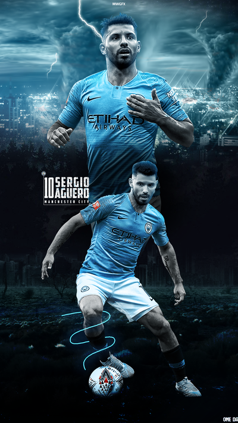

Neymar Jr
Neymar da Silva Santos Júnior, known as Neymar, is a Brazilian professional footballer who plays as a forward for Ligue 1 club Paris Saint-Germain and the Brazil national team. He is widely regarded as one of the best players in the world.

Lionel Messi\The Goat
Lionel Andrés Messi is an Argentine professional footballer who plays as a forward or an attacking midfielder and captains the Argentina national team. He is currently a free agent, having played all his professional career for La Liga club FC Barcelona, whom he captained from 2018 to 2021.

Cristiano Ronaldo
Cristiano Ronaldo dos Santos Aveiro GOIH ComM is a Portuguese professional footballer who plays as a forward for Serie A club Juventus and captains the Portugal national team.

Paulo Dybala
Paulo Exequiel Dybala is an Argentine professional footballer who plays as a forward for Serie A club Juventus and the Argentina national team.

Mesut Ozil
Mesut Özil is a German professional footballer who plays as an attacking midfielder for Süper Lig club Fenerbahçe. Nicknamed "The Assist King", Özil is known for his technical skills, creativity, agility, and finesse. He has also played as a wide midfielder in his career.

Mauro Icardi
Mauro Emanuel Icardi is an Argentine professional footballer who plays as a striker for Ligue 1 club Paris Saint-Germain and the Argentina national team.

Di Maria
Ángel Fabián Di María is an Argentine professional footballer who plays for Ligue 1 club Paris Saint-Germain and the Argentina national team. He can play as either a winger or attacking midfielder.

Sergio Aguero
Sergio Leonel Agüero del Castillo, also known as Kun Agüero, is an Argentine professional footballer who plays as a striker for La Liga club Barcelona and the Argentina national team. He wears "Kun" on his shirt, a childhood nickname based on the title character from the cartoon Kum-Kum.

Kylian Mbappé
Kylian Mbappé Lottin is a French professional footballer who plays as a forward for Ligue 1 club Paris Saint-Germain and the France national team. Mbappé began his senior career with Ligue 1 club Monaco, making his professional debut in 2015, aged 16.

Mohamed Salah
Mohamed Salah Hamed Mahrous Ghaly is an Egyptian professional footballer who plays as a forward for Premier League club Liverpool and captains the Egypt national team. Considered one of the best players in the world, he is known for his finishing, dribbling, and speed

Kevin De Bruyne
Kevin De Bruyne is a Belgian professional footballer who plays as a midfielder for Premier League club Manchester City, where he is vice-captain, and the Belgium national team

Harry Kane
Harry Edward Kane MBE is an English professional footballer who plays as a striker for Premier League club Tottenham Hotspur and captains the England national team. Regarded as one of the best strikers in the world, Kane is known for his prolific goalscoring record and ability to link play
All Highlights
Copa America 2021
The 2021 Copa América was the 47th edition of the Copa América, the international men's football championship organised by South America's football ruling body CONMEBOL. The tournament took place in Brazil from 13 June to 10 July 2021.
Watch Now